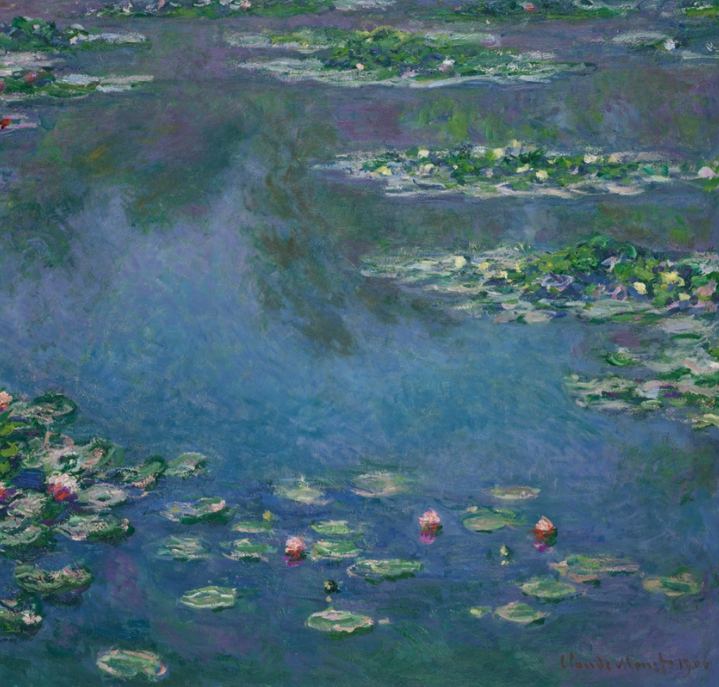

My Location:
SEARCH ANY LOCATION
WEATHER INFORMATION
city
°C
weather:
wind Speed: km/h
LOCAL TIME
local time:
OTHER MAJOR CITIES
- New York :
- London :
- Tokyo :
- Sydney :
- Paris :
- Colombo :
My Location:
city
°C
weather:
wind Speed: km/h
local time:

Little did Claude Monet know that the water garden he created three years after buying his Giverny, France, property in 1890 would become his primary inspiration over the next two and a half decades. These paintings, numbering around 250, mark Monet’s artistic journey from more straightforward depictions of the pond spanned by the wooden Japanese bridge to the monumental and near-abstract series on the water lily theme he made in preparation for his murals at the Musée de l’Orangerie in Paris between 1914 and 1926.
Medium: Oil on canvas · Dimensions: 89.9 × 94.1 cm
Credit: Art Institute of Chicago, Mr. and Mrs. Martin A. Ryerson Collection, 1933.1157